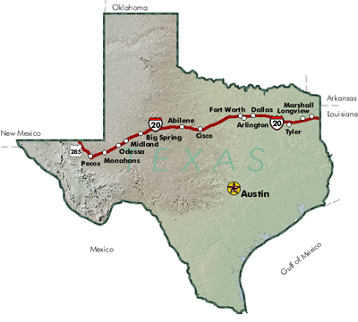

Currently the Waste
Isolation Pilot Plant (WIPP) in New Mexico is seeking final approval
from the Environmental Protection Agency (EPA) to begin site operations.
Currently the Waste
Isolation Pilot Plant (WIPP) in New Mexico is seeking final approval
from the Environmental Protection Agency (EPA) to begin site operations.
Visit the EPA's Office
of Radiation and Indoor Air WIPP Homepage for more information
in both English and Spanish.
When operations begin, shipments of transuranic waste will be passing through 22 Texas counties and 45 cities along the I-20/US 285 corridor, to include:
|

Radioactive waste will travel in cannisters called TRUPACTS. |
Truck shipments will travel along the I-20/US 285 shipping corridor through these counties and in this order:
|
 |


Updated 12/1/98